olá, eu sou a Laís
Bem-vindo ao meu universo de design, onde cada pixel tem um propósito.
empresas e marcas com que já trabalhei
Respira. Bons produtos nascem de boas perguntas.
ver projetos-
Globo/ACT · GloboPop
UX Designer Senior
01/2026 · atual
Lançamento do GloboPop: Comunidades (UGC), username do onboarding ao perfil e um plugin de Figma que automatiza o handoff.
-
Globo/ACT · ge
UX Designer Senior
08/2025 · 12/2025
IA nas transmissões ao vivo: insights do “Você Sabia?” e resumo das partidas em tempo real para reter quem assiste.
-
BR Media · App MIS
Product Designer Sênior
08/2024 · 12/2024
04/2026 · 09/2026Comunidades de creators no app MIS e gestão para marcas no SIC — já em uso por Pantene, Dove e Cetaphil.
-
Omie · SaaS
UX Designer Analyst Sênior
01/2025 · 08/2025
UX e CRO em Growth: design system que cortou 40% do SLA de landing pages e cadastro com +100 agendamentos.
-
Zamp · Burger King e Popeyes
UX/UI Designer
02/2022 · 08/2024
Totens de autoatendimento: +28% em vendas, +9,1% no ticket médio e +15 p.p. no NPS transacional.
-
Trendx · Goper
Product Designer
01/2019 · 01/2022
Criei a área de design do zero: processos de UX/UI, pesquisa com usuários, identidade visual e design system.
Projetos
Projetos em destaque
Como eu trabalho
Meu processo de design
-
Entender o problema
Começo alinhando com produto, engenharia e negócio o que precisa mudar e como vamos saber se deu certo. Antes de abrir o Figma, reviso dados, pesquisas anteriores e restrições técnicas.
-
Pesquisar e explorar
Converso com usuários e stakeholders, faço benchmarking e mapeio os fluxos para ver o problema por inteiro. A ideia é chegar com opções bem embasadas, e não com uma única resposta.
-
Desenhar e validar
Passo de wireframes para protótipos de alta fidelidade no design system, escrevendo o texto da interface junto com o layout. Testo com usuários e itero com o time antes de fechar a solução.
-
Entregar e acompanhar
Documento estados, regras e casos de borda para um handoff sem ruído. Depois sigo a implementação e os resultados para decidir os próximos passos.
Feedbacks
O que dizem sobre o meu trabalho
Líderes e colegas, nas próprias palavras, sobre o que mudou depois que trabalhamos juntos.
Por trás das telas
Um pouco de mim fora do Figma
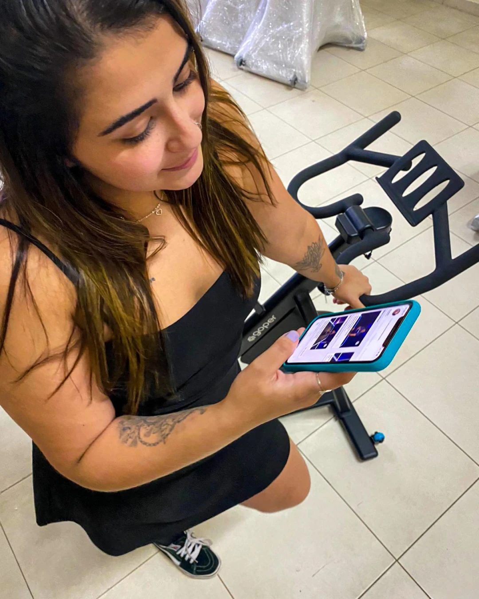
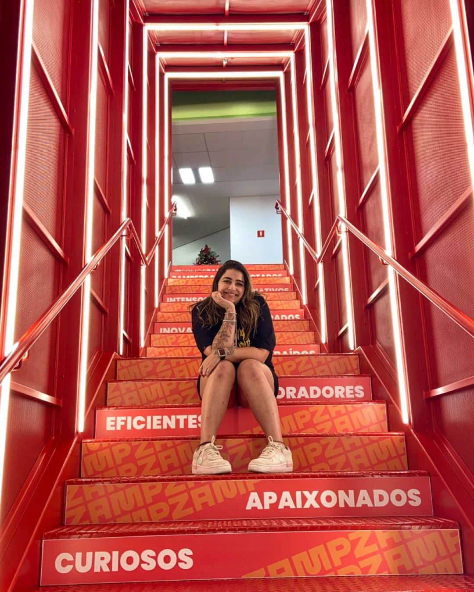
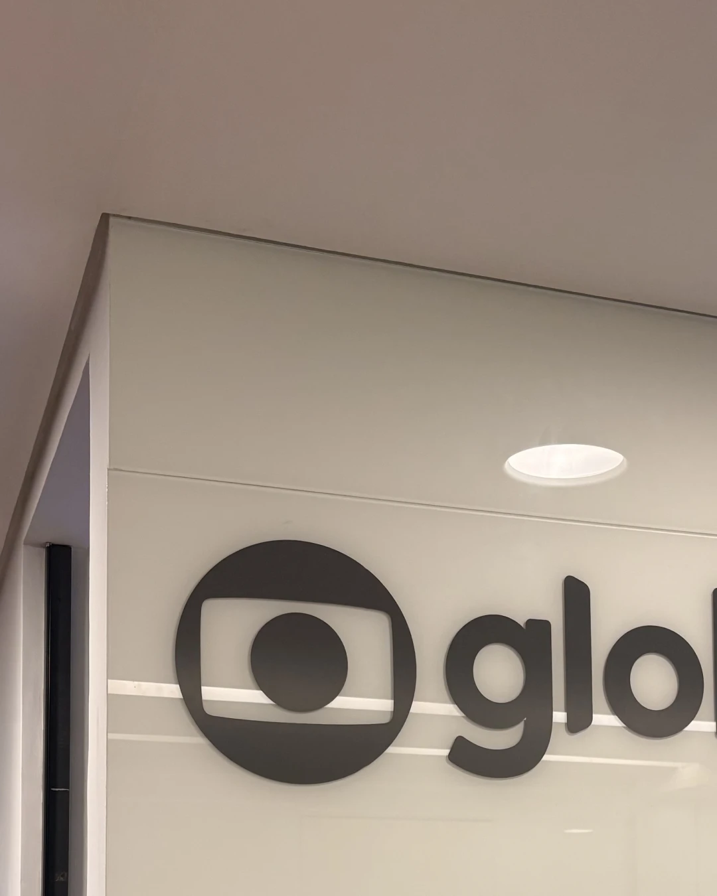
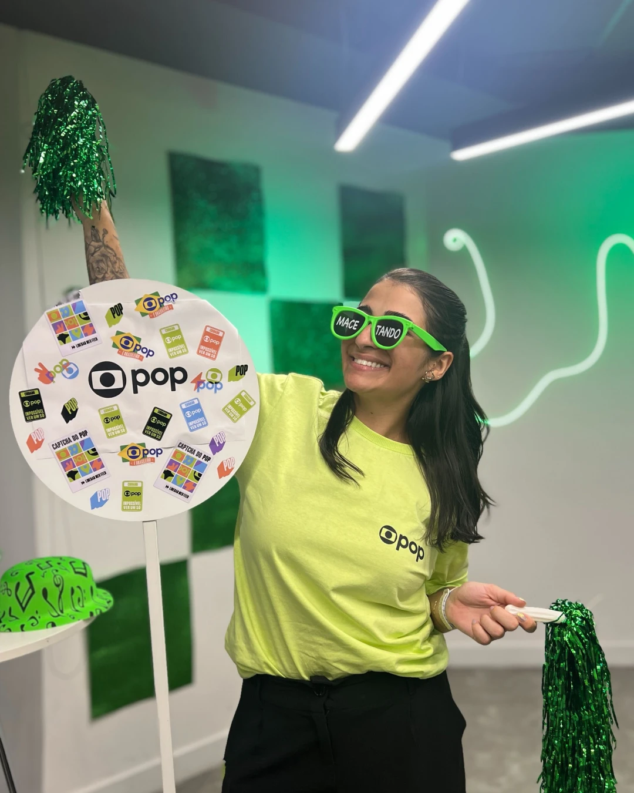
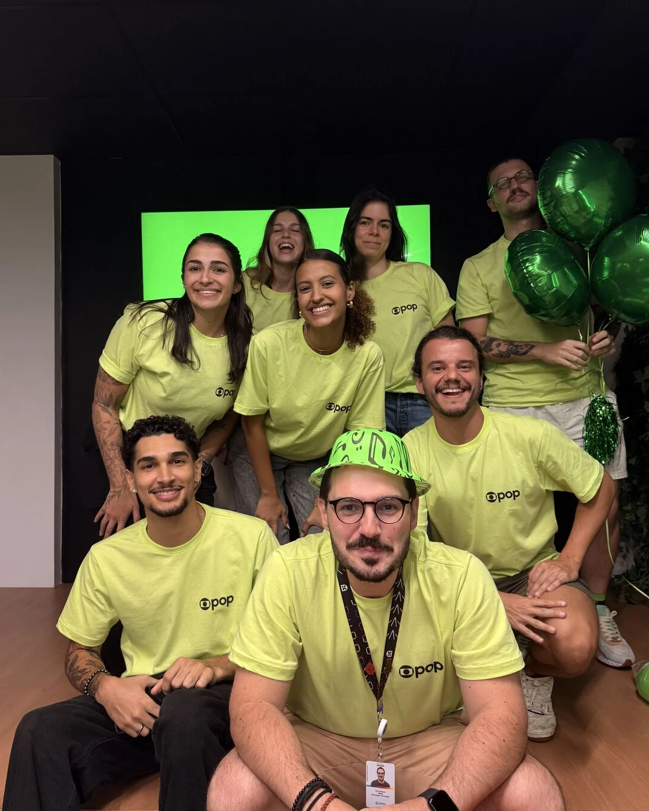
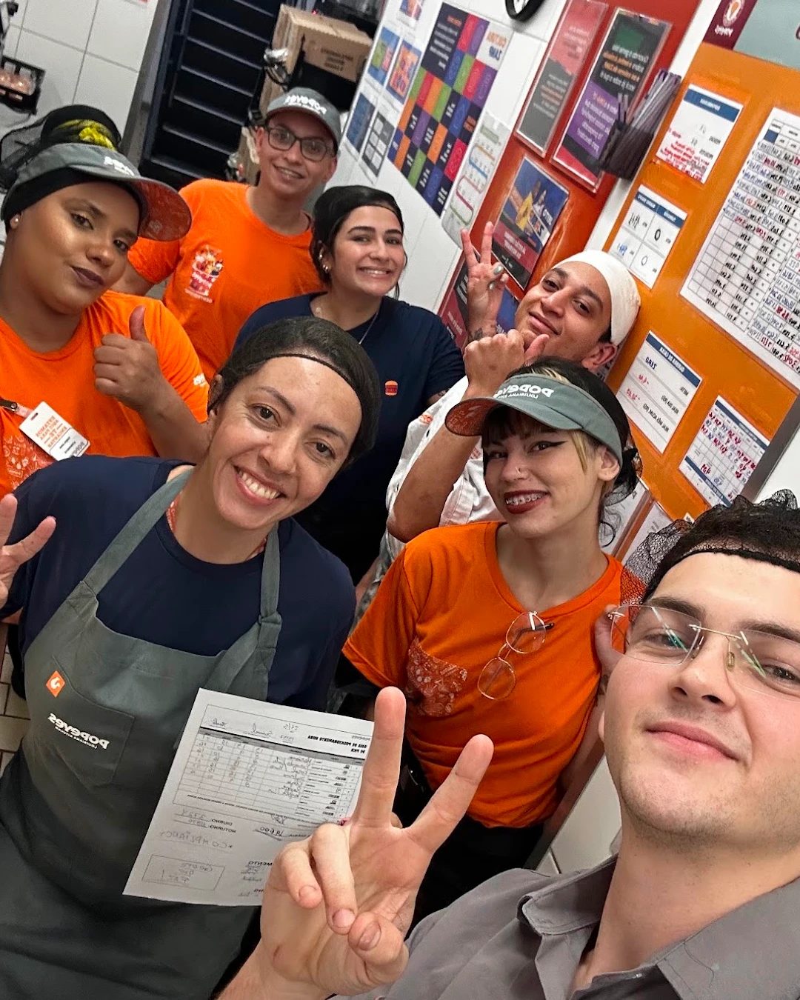
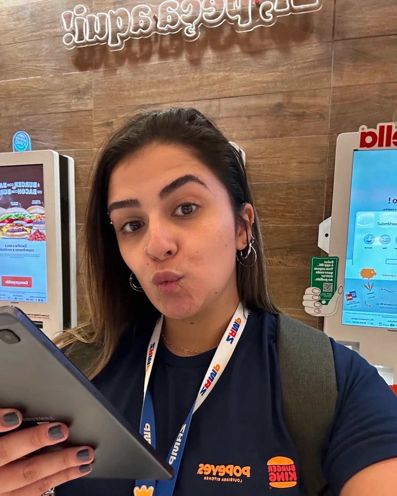
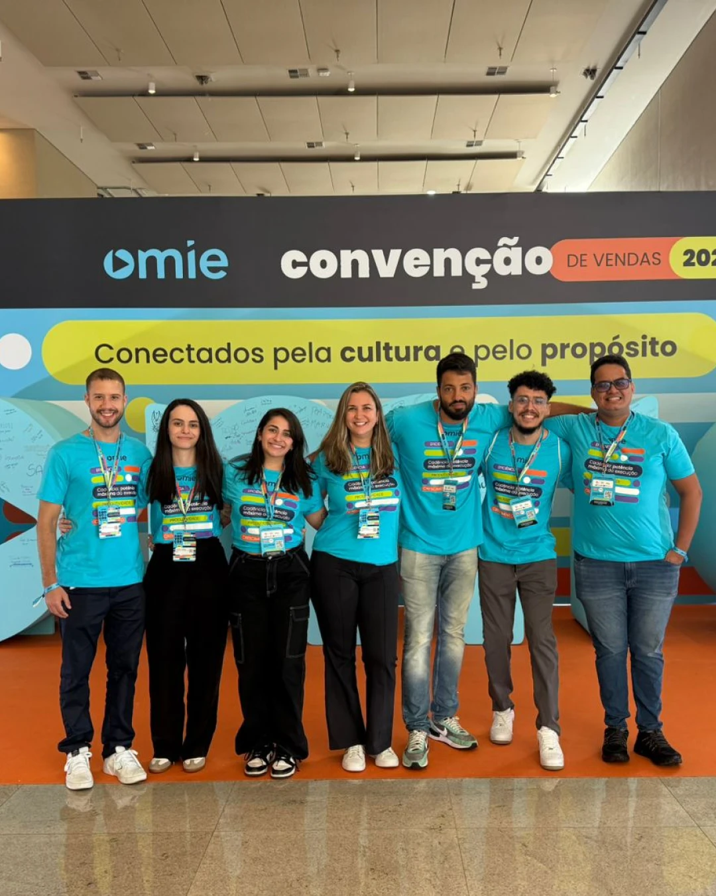
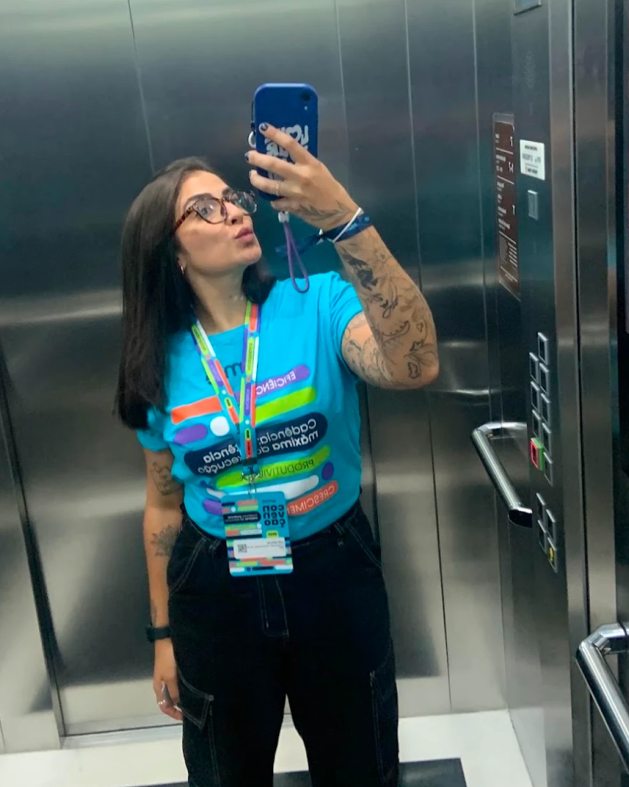
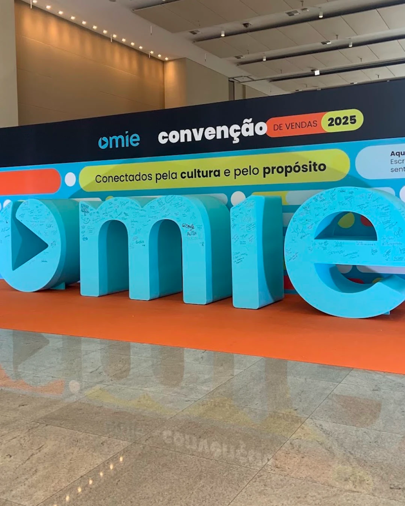
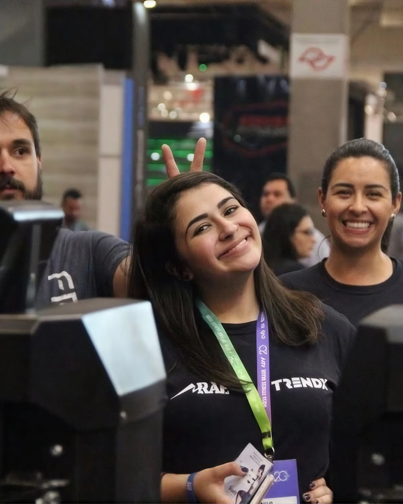
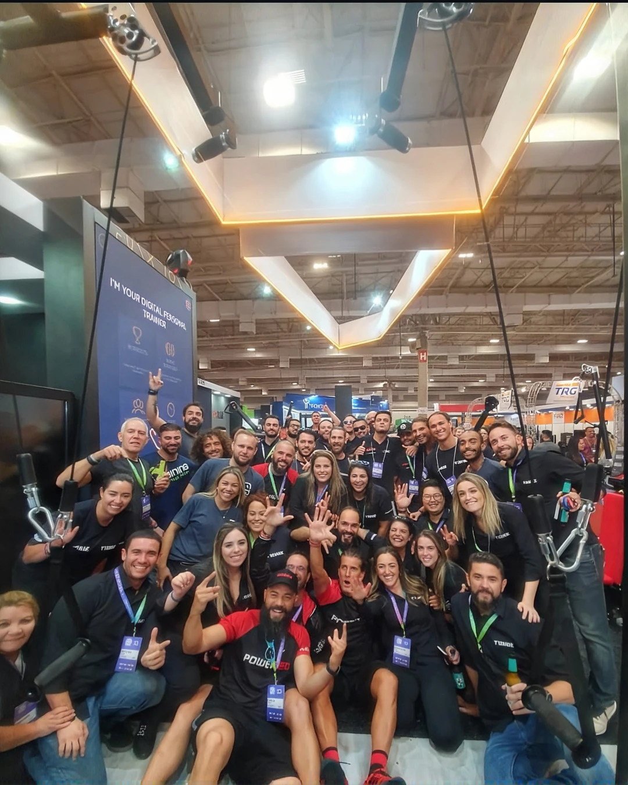
Contato
E aí, bora trabalhar juntos?
Menos formalidade, mais conversa. Vamos marcar um papo sobre o seu produto ou a sua vaga.
Design é sobre pessoas.
Cada pixel tem um
propósito.